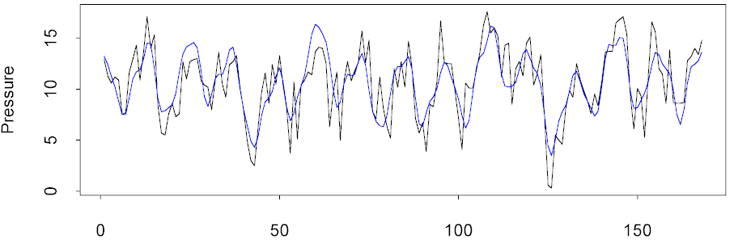

| / Home |
Keywords: time series, nonlinear regression, frequencies
The data are monthly averaged atmospheric pressure differences between Easter Island and Darwin, Australia. This difference drives the trade winds in the southern hemisphere. An annual cycle may be expected, and also longer cycles corresponding to the El Nino and to the Southern Oscillations.
| Variable | Description | ||
| Pressure | Monthly average atmospheric pressure differences | ||
Data file (tab-delimited text)
| Kahaner, D., C. Moler, and S. Nash, (1989). Numerical Methods and Software. Englewood Cliffs, NJ: Prentice Hall, pp. 441-445. |
| NIST Standard Reference Data Sets. |
Harmonic analysis of the data reveals at least 5 significant cycles. The annual cycle is the strongest, but cycles with periods of approximately 43 and 27 months are also present. These cycles correspond to the El Nino and the Southern Oscillation. There are also a six month harmonic for the annual cycle and a fast cycle with a period of about 4.6 months.
In the plot below, the black line is the data and the blue line is a sum of 5 sinusoids and a constant term.
> out5 <- pronyfreq(Pressure,nfreq=5) > 2*pi/out5$freq [1] 43.402539 27.086301 11.940698 6.028685 4.561043 > plot(Pressure,type="l") > lines(1:168,out5$fitted,col=4)

|
Home - About Us -
Contact Us Copyright © Gordon Smyth |